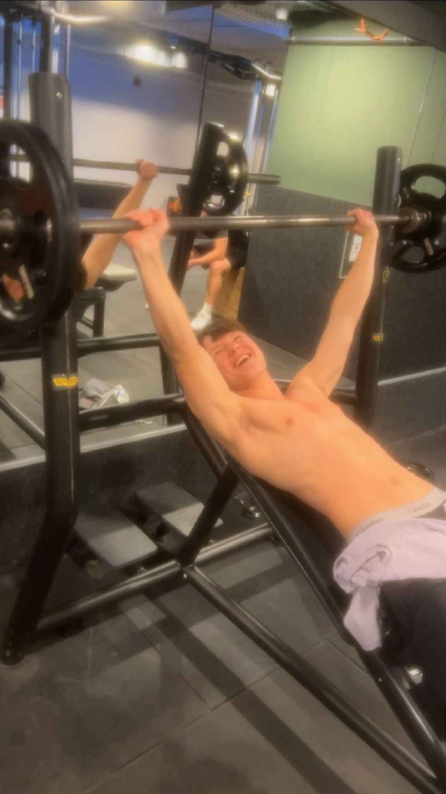

Oto's bacbook comments
gros toi cest un vrai homme hn oullah je t’aime - Xerxa Blin
Bonne chance pour l’année prochaine, profite et longue vie.
Morane Delboy
Aille Oto, t’embrassait vraiment mal. Jte souhaite de grandes choses dans ta vie et un max d’argent.
S
we frro franchement on se connait depuis l’époque CLL anglais et j’aurais pas penser qu’on deviendrait
si
proche. T’es vraiment un vrai ami pour moi et je sais très bien que je peux compter sur toi et j’espère
pouvoir encore compter sur toi a l’avenir. Je te souhaite de réussir dans ton futur travail et tes
futurs
études en tout cas tu en as les capacités j’en doute pas mon frr. Visca barça
mark danulescu
Jamais on sennuie avc toi que des bons moments en englais en geo ou en ksaar ça change pas grand chose
ahah.Jte souhaite le meilleur pour la suite et qui sait ptt que tarriveras au million un jour.💸🫵
Marci
Mon gars, depuis la 1er maternelle ensemble franchement c incroyable on a tjrs bien rigolé ensemble et
passe
plein de bon moments, plein de bon souvenirs que j oublirai pas, et on c vu évoluer aussi. Que ça
continue g
Tusei Gabriel
Letton fou. Tu m’a beaucoup fait rire pendant toute cette année! Que des dingueries avec toi! Reflechis
plus
souvent aux consequences de t’est actes stp🤣 Je te souhaite que du bonheur dans la vie est plein de
réussites! Bonne continuation!
Max Buchmann
T’es vraiment un letton fou wlh. Ça fait plaisir de t’avoir dans mon entourage. J’espère qu’on restera
en
contact après la s7 et que t’auras la belle vie plus tard frero.
Messan Manael
Lpb sah
Tkt
Mets ta veste Ralph Lauren à l’unif par pitié arrête avec la nike
Tsb
franchement j’crois tu auras un futur incroyable, même si tu kiffes les petites de 12 ans.
Hania Walentynowicz
Tiago Starkie Alves
Bonne chance pour l’avenir Oto! J’espère q le livre de David Goggins t’a bien inspiré
Tchétchène ou pas mon frerot , T es un bon
Oscar stockwell
Mon gars depuis le premier jour de secondaire et en L2 avec l’horrible Belda. T’es vraiment un bon et je
te
souhaite beaucoup de réussite dans tes futurs projets, je crois en toi.
Linus Vernet
sale letton , j’me rappel de l’époque ou t'avais pas de sourcil , notre 1vs1 bagarre en s5 hahha . Sinon
tu
es une bonne personne , très bon délire et jte souhaite que du positive pour ton futur mon frère .
Chamou yaniss
Bonne chance pour le futur frero.
Alexander Charret
Oto nous deux ensemble on a passé des bonnes temps en L2 avec Causteur ou en Geo et Histoire avec
Guillon.
Bonne chance pour ton temp après l'école.
-Friedrich
Friedrich von Campenhasuen
Salut Oto,bon courage pour l’année prochaine, à bientôt!
Nom et prénom
Alexandre H
J’allais juste mettre “longue vie” mais bon c’était pas assez original haha. T’es vraiment un bon pote
et
j’apprécie le fait que t’as toujours été la pour moi. Nos petites discussions vont beaucoup me manquez
mais
tranquille on en aura d’autres peut être à Rotterdam haha! Bonne chance pour l’année pro :)
Mel
oto mon gars, notre amitié a vraiment commencé lors des cours de sport en s5, gros on avait les
meilleures
conversations et je me souviens de ma 4/10 à cause de ça dans le bulletin haha. Et après toutes les fois
qu’on s’est vu, un petit durum au snicksnack ou des baskets. C’était toujours bien de te voir. Eh sinon
chais pas notre conversations sur des meufs et sur tout en général ct vraiment bien. Je te souhaite le
meilleur pour le futur et j’éspere qu’on se verrai encore de temps en temps.
Julian Gross
même si tu fais peur à la prof de philo je sais qu’au fond t’es un bon.
bonne chance pour la suite !
eleonora
Oto, tu esi boss. Jautrākais latviesu valodas stundās. Turi buru❤️
Juris Laudinskis
Nu vecīt, rakstu latviski, jo kā jau tu saki esmu īsts latvietis. Pazīstu tev jau tik sen ārprāts. Pie
tevis
pirmo reizi spēlēju fifu, atceros cik sūdīgs biju. Tev dzīve viss izdosies, principā jau zini visu ko un
kā
dzīvosi. Būsi bagāts. Tā kā nemaukojies parāk daudz. Novēlu tev visu to labāko.
P.S: paldies tev, Aleksandram un Gustavam, ka palīdzējāt man iejusties skolā.
Kārlis
Oto , mon pote depuis la p5. C est vrai qu avant on était des très bon amis mais maintenant un peu
moins.
J'aime toujours l'énergie que t'apporte et tu souris tout le temps . Bonne continuation et j espère que
tu
atteindras les universités que tu désires!
Miguel Da Costa Cabral
Une époque les gens voulait te faire avec les poubelles otto les cours de musique où on criait Oto Oto
Oto
en vrai c’était la bonne époque. J’espère tu réussis ton business et que ta les voitures que tu veux.
Longue
vie
Antoine Théo
Je te souhaites plein de réussite et de bonheur 🫶🏻 C’était trop chouette d’être dans la même classe et
je
suis sûre que tu deviendras un businessman de succès ! On reste en contact ;-) Pauline Apollonio
Vēl atceros tavas dzimšanas dienas pirms vairākiem gadiem, kad spēlējām futbolu, bija baigi forši.
Novēlu
tev labāko nākotnē.
Gustavs Grečihins
Par où commencer, tout au début quand tu nous invitais chez toi et qu’on faisait des foots près de chez
toi,
des batailles d’eau chez toi, des matchs dans ton jardin, les sorte de soirées avec Oli chez toi et
qu’on
avais cassé le lit, le prime de Fifa mobile quand t’étais un crack à l’achat revente, la course qu’on
avait
fait a stade Fallon, les annifs au karting ou encore au paintball à l’époque, puis par la suite toute
les
soirées gh à l’époque quand tu faisais grave le fou à ramener direct des teilles, puis le prime des
soirées,
le pdw, une fois t’avais fait arrêter le tram parce que t’avais ramener une trot dedans, le moment bien
gênant ou t’avais eu bien et moi le porte avion, puis quand on étais grave khabat au gh et qu’on
chantait
comme des sdf la chansons des schtroumpfs, puis toute les soirées au 50, chez Lucia, chez Jules, chez
Adèle,
a Ostende, au springball avec la d chez Mel avant, l’équipe interclasse les dragons. T’es un mec
vraiment
unique, dans tous les sens du terme. On verra si l’année prochaine on étudie dans le même pays ou même
ville. En tout cas je te souhaite le meilleur pour la suite.
Josep CASANOVAS MAJOR
Toi, toi tu es un spécimen rare, en cours tu oeux passer de clown totale a premier de la classe et en
faisant ça tu as 10, ca restera toujours un mystère pour moi. Sache que même si a des moments je me suis
énerve contre toi, tu resteras toujours un vrai.
Je te souhaite que du bonheur dans la vie, Oscar
Oscar Solé
bonne continuation oto! tu es une de mes meilleures rencontres, tu vas me manquer. je te souhaite que du
bonheur.
Lu
Courage pour la suite le sang, t’es trop un crack.
J’espère que tout va bien se passer, je te le souhaite.💪🏻
Kastida
longue vie oto 🙏 c’était sympa de t’avoir dans la classe, je te souhaite le meilleur pour la suite
Lydia
Merci beaucoup de listening to mine and Pauline’s lil vlogs we send u and your honest responses hahah If
I
ever meet my army guy again I’ll for sure have u know that I made it. I wish you all the best and luck
in
the future!
Nom et prénom
Mafalda Leão Costa
Oto j’ai commencé à te connaître y’a longtemps hein. Et ta bien changé depuis. Avant c’était le petit
canard
en cours de musique, pote avec Nikolay. Et maintenant c’est devenu un vrai drare de bx. Mais si y’a un
truc
qui a pas changé c’est bien ton niveau en math, ta beau rein foutre toute l’année ta quand même 10 au
test.
Jules
Jules cabau
Oto, le paresseux qui vient travailler à l'école. Otto, la poubelle ambulante qui se fait balayer par
tout
le monde. Oto, le gars sans sourcils tellement jaloux qu'il a failli m'en laisser sans. J'ai raconté
beaucoup de merde, maintenant la vérité: Oto, tu'es un paresseux pourtant dans l'ombre de ta maison tu
charbonnes à fond. Oto, tu parles beaucoup de merde mais il y a beacoup de vérité dans ce que tu dis et
surtout avec cette merde, tu nous mets toujours, sans faute, dans la bonne ambiance. Oto, t'arrêtes pas
de
nous impressionner, ne change rien, continue comme ça, on t'aime tous! De la part de ton gars, Mihail.
Mihail D. Staicu
Oto malgré tes blagues bien discutables pdnt les années tu restes un bon pote, bonne continuation pour
la
suite et on se voit au bac trip PS : fait gaffe à la piscine -Ysa
Bonne chance pour les etudes et le futur. J’hespere que on vous auras battu à interclass entretemps 😉.
J’oublie pas les ksaara passés ensembles et les d libre. T’as toujours été un bon et j’ten remercie.
Bonheur
et prospérité mon frr
David N
Oto mon gars tu va me manquer. Les heures de français ou on faisait rien en classe à part dormir. Même
si
français était nul, il y avais de bons moments. Bonne chance pour ton future. Noah
Noah Wittelsberger
Oto la vie toi et tes blagues vont me manquer, t’es vrm un bon qui met toujours la bonne humeur. J’ai
trop
hâte pour le bac trip et bonne continuation!
Lucia
Bon mon gars j’ai tellement de trucs que je peux te dire. On se connaît tt les deux par cœur et t’es mon
meilleur pote depuis que suis dans cette école. On se connais depuis 8 ans mtn. Comment le temps passe
vite.
Ptn j’me rappelle en p5 toute la merde qu’on fesait en classe de neige et tt. Qd on était privé de
patinoire
ou tobogganing haha. Ou encore dans le bus qd on appelait des gens au hasard ou qd t’as faillit me tuer
en
m’étranglant mdr. T’es plus qu’un frr pour moi, t’as tjrs été la pour moi et en fin de compte à chaque
fois
que tu me disais comment allait se passer certaines choses t’avais raison. Merci pour tt t’es conseils
et
oué je devrais plus souvent t’écouter et toi aussi haha. Bon je vais pas te faire tt une décla d’amour
mais
oué jte kiffe et j’suis vrmt content qu’on sait rencontrer. Je sais qu’on est pote pour la vie mtn et
oué
j’ai hâte de voir ce qui va se passer dans l’avenir et qd on aura tt les deux des enfants et tt. Pour
ton
avenir j’ai pas de doutes, tu vas percer et on kiffera notre vie, à toi le frr, kalo!
Alors toi mon pote. Alors toi. Toi la. Toi t’es Vraiment un personnage qui a été important dans ma vie.
Et
Oue sah ça fait combien de temps on se connais dit moi? 14 ans ? Jaahahah nan j’arrive pas à réaliser
sah.
Frro c’est un truc de fou. Malgré les haut et les bas comme pendant mon embrouille avec toi ou mm le
tête
dans le park, sache que ta tjr ete un bon frr. Nan sah limite on dirait qu’on est frr. Vdm je crois que
t’es
le type que tes le type avec qui j’ai eu le plus de cours ensemble 🤣🤣🤣. Limite je t’ai plus vu que ma
daronne réellement. Frro mm si souvent je te le montre pas, mais tu est qqn d’important pour plusieurs
raisons. Déjà t’es très honnête, drôle et extraverti. Pour sa je te respecte et je me suis beaucoup
inspiré
de toi. Un autre raison pq je t’aime bien c’est parce que j’ai l’impression que tu ma jamais réellement
trahis de ce que je sache. Et je pense parmis les loups t’es le seul et voilà quoi. C’est pour ça que
pour
moi t’es quelqu’un de valeur wlh. Moi mes conseils pour toi sa serais d’avoir une roadmap précise avec
un
objectif précis et des étapes à suivre pour que tu puisses réussir dans la vie. Là je te parle pas de
faire
un petit objectif comme rouler en rangrover. Moi je te parle vraiment de tes rêves de gosse. La fefe ou
n’importe. De toute façon Dieu il t’a littéralement tout donné pour que tu puisse tout accomplir. Ta
vraiment très bien évolué sah sah. Tu te rends pas compte de où on est partis et aujourd’hui on a tjr
pas
percé mais on a grandi mentalement et physiquement. Eeeee oue mon pote. Je t’ai dépassé en taille tu vas
faire quoi mtn. Bon. Frro j’ai beaucoup rigolé avec toi, la vérité j’espère on reste en contact après la
s7
et on ressors de temps en temps. Tu le promets ?
Alex Rasa Futur CEO
frero on se connait depuis la P1 j’ai pleins de bons souvenir avec toi. Toutes les années ou on faisait
interclasse, ou en classe de neige quand on était dans le même groupe et qu’on devait faire les
“ambulanciers” alors qu’on savait pas skier. Ou alors quand on faisait la course pour finir en premier
le
cahier de maths, ou les cours de sciences intégrées avec Mme Idris. T'es un des gars les plus drôle que
je
connaisse, je te souhaite que du bonheur et je sais que tu vas réussir tout dans ta vie.
Olivier Deschrijvere
Alala oto, mon premier ex. T es vraiment un bon gars et j’aime trop comment tu te prend jamais la tête.
Change surtout pas et je te souhaite bonne chance pour ce que tu choisi de faire plus tard.
Vicky
Un plaisir d’avoir été avec toi en math, philo et à interclasse. Aussi, mon but dans la vie c’est pas de
m’occuper des pieds des gens au cas où. Eline
Eline Hance
Mon gars Oto depuis la première maternelle jusqu’à la dernière année on a été meilleur pote et c est
incroyable franchement j ai eu une sale amitié avec toi, tous ces bon moments qu on a eu ensemble comme
les
week-ends à Rotterdam, à Cracovie, les week-ends ou je dormais chez toi après les ksaar, les foots et
baskets, courir, la salle ensemble, en maternelle et primaire quand il y avais besoin j étais là pour
frapper les gens et te défendre, mais toi je pouvais pas te frapper car ton père était policier (bien
joué).
On a fais tous ensemble tu ma vraiment bien fais rire, à chaque fois qu on étais ensemble, ct un vrai
délire. On c’est vu évoluer et c est pas fini, t est ambitieux mais flemmard, change cela. En tout cas j
oublierais jamais notre amitié, qui a durée 14 ans et c est pas prêt d être fini. En tout cas je te
souhaite
le meilleur et de tout façon on restera ensemble encore longtemps je pense mon gars. Dans quelques
années tu
sera dans ta Porsche GT3 rs et moi ma Ferrari 488 pista et on roulera à deux dans le monde entier, ça c
est
sur.
Tusei Gabriel
le crack parmi les lettons, cimer pour rendre les cours de math où je suis entouré par des tryhards qui
parlent pas plus faciles et plus droles bein que tu ne fasse que nahess. Force pour la suite, et, comme
qui
dirait, longue vie.
Giuliano
bonne chance pour tes études oto !!
emma
Oto, depuis que je te connaît j’ai toujours bien rigolé quand j’étais avec toi. J’ai passé des bons
moments
avec toi que ce soit à l’école ou en dehors. Je te souhaite le meilleur pour le futur et j’espère tu va
percer dans le game du business
Davide
J’adore les petits conseil de couple que tu donnes aux filles, c’est toujours très utile haha. Mais t’es
super bon délire et tu nous fait toujours rire. Je suis super heureuse de t’avoir rencontrée et je hâte
de
faire le bactrip ensemble - adèle
adèle
On se connait réellement depuis pas si longtemps que ca et tu ramènes toujours l ambiance mon fréro donc
je
te souhaite mes meilleurs voeux on prie que ca perce sur vinted
Zsombor
Otooo, les cours d'éco avec toi et Daniel c'était une dinguerieee. Merci de m'avoir fait autant rire
mdrr et
j'te souhaite que du bonheur mon letton préféré:)
Loukili Sarah
Oto oto oto, mon frero, le leton pas net, ta tete de choux fleur… Sah mon gars ca fait quoi,3-4 ans
qu’on
est shab ptt plus meme. Je t’ai bien taille a l’époque mais je sais qu’on est tout les deux passe a
autre
chose alors j’en parlerai pas 🦆🤣. Non la vérité jvais etre serieux, frero jte considère vraiment comme
un
de mes meilleurs amis et ca tu le sais, on a eu pas mal d’embrouilles toi et moi (les vacances en france
🤣🤣🤣) mais surtout plein de bons souvenirs que j’oublierai jamais my g. Toutes ces ksaaras ensemble,
toutes ces (rare) bedaves, toutes ces sortis etc… Mon pote t’es vraiment un vrai et t’es une des
personne a
qui je pense faire le plus confiance parce que je sais que tu poucaverais jamais ce que je te dis (a
moins
que tu fasses une gaffe comme d’hab🤣). T’es aussi une des personnes les plus drole que je connaisse pcq
srx
jsp comment t’as les couilles de faire ce que tu fais des fois🤣. Sah par contre tu m’as bien pt les
couilles en physique wlh j’en pouvais plus l’année passée. La première fois ou on a bedave chez toi c
probablement la meilleure skren de tt ma vie c t vraiment incroyable et jten remercie my g. Tu vas
surement
rester en Belgique inchAllah donc on va d’office continuer a se voir, donc ce message n’est qu’un au
revoir…
Je te souhaite que du bonheur et de la réussite pour la suite
Anas Salva
Oto mon reuf jme souviens de la S3 quand tu venais avec nikolay chez oim, t’etait un de mes premiers
potes.
Bonne chance pour la suite l’ancien, content de t’avoir eu dans ma classe bg
Victor girard
Oto mon fréro, notre histoire a commencer avec une haine entre nous au terrain en s2 ou on c insultait
tout
les jours, depuis c jour la tes devenu on de mes vrai frère, je peut compter sur toi dans n'importe
quelle
situation, je suis content que mtn on habite dans le même quartier et que on puisse c côtoyer plus
souvent.
Ps: Désolé pour tout la hagra que je tai mis au foot après c toi qui a choisis le mauvais cote. PS:
petit
charo faut que t assumes quand tu commence a parler a une meuf. Bonne chance pour ton futur et j'espère
que
tu reste a bx avec moi et que on puisse continuer a aller en ksaara.
Francisco